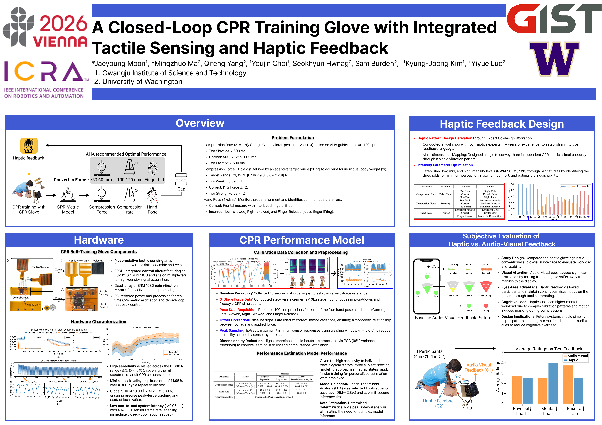

Poster

Abstract
Cardiopulmonary resuscitation (CPR) is a critical life-saving procedure, and effective training benefits from self-directed practice beyond instructor-led sessions. In this paper, we propose a closed-loop CPR training glove that integrates a high-resolution tactile sensing array and vibrotactile actuators for self-directed practice. The tactile sensing array measures distributed pressures across the palm and dorsum to enable real-time estimation of compression rate, force, and hand pose. Based on these estimations, the glove delivers immediate haptic feedback to guide the user for proper CPR, reducing reliance on external audio-visual displays. We quantified the tactile sensor performance by measuring wide-range sensitivity (≈ 0.85 over 0–600 N), computing hysteresis (56.04%), testing stability (11.05% drift over 300 cycles), and estimating global signal-to-noise ratio (18.90 ± 2.41 dB at 600 N). Our closed-loop pipeline provides continuous modeling and feedback of key performance metrics essential for high-quality CPR. Our lightweight statistical models achieves >92% accuracy for force estimation and hand pose classification within sub-millisecond inference time. Our user study (N=8) showed that haptic feedback reduced visual distraction compared to audio-visual cues, though simplified patterns were required for reliable perception under dynamic load. These results highlight the feasibility of the proposed system and offer design insights for future haptic CPR self-training system.
Paper
Jaeyoung Moon, Mingzhuo Ma, Qifeng Yang, Youjin Choi, Seokhyun Hwang, Sam Burden, Kyung-Joong Kim, and Yiyue Luo. "A Closed-Loop CPR Training Glove with Integrated Tactile Sensing and Haptic Feedback." arXiv preprint arXiv:2603.05793, 2025.
BibTeX
@article{moon2025closedloop,
title = {A Closed-Loop CPR Training Glove with Integrated Tactile Sensing and Haptic Feedback},
author = {Moon, Jaeyoung and Ma, Mingzhuo and Yang, Qifeng and Choi, Youjin and Hwang, Seokhyun and Burden, Sam and Kim, Kyung-Joong and Luo, Yiyue},
journal = {arXiv preprint arXiv:2603.05793},
year = {2025},
url = {https://arxiv.org/abs/2603.05793}
}